Induction in sugar mixtures: GCS in individual cells
Théo Gervais
February, 2025
In this notebook, we analyse the growth-coupled sensitivity of the lac operon to lactose at the single-cell level, when E. coli grows on mixtures of glucose and lactose at a given concentration.
Sanity checks
We want to start by checking that the growth rates are the ones we expect to see, in relation with the bulk level analysis
Sanity check on instantaneous growth rate distribution
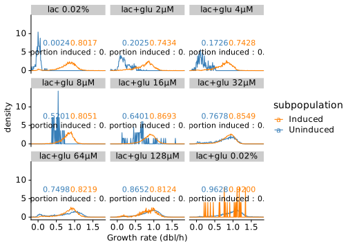
Sanity check on average cell growth rate distribution
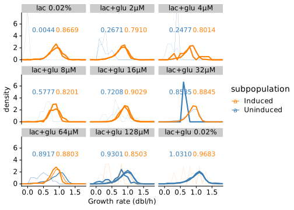
The picture looks very similar to what we previously computed on full cell cycle growth rates
Distibution of concentration and production rates
To be able to define the switches we want to define thresholds in terms of concentration and volumic production rates, that separate induced from non induced cells.
Distribution of concentration induced vs non induced
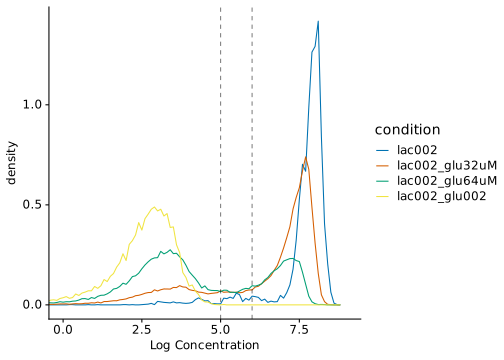
It looks like the concentration separating non induced from induced lies between exp(5) (~150 gfp/µm) and exp(6) (~400 gfp/µm). Setting the threshold at exp(5.5) (~250 gfp/um) therefore sounds sane, and corresponds to the threshold used this far.
How are the distributions of concentration for induced cells as a
function of the glucose concentration ?

Distribution of production induced vs non induced
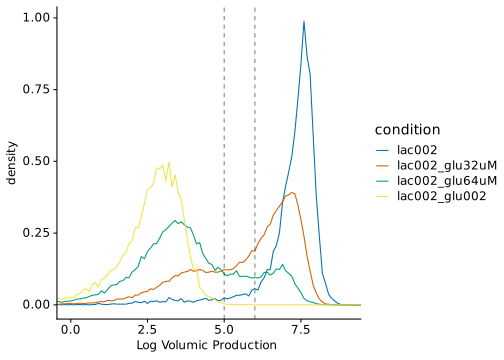
Similarly, the production separating the uninduced from the induced state lies between exp(5) (~150 gfp/h/µm) and exp(6) (~400 gfp/h/µm)
How are the distributions of production for induced cells as a
function of the glucose concentration ?

Defining real switches
Switching traces
We observe that, in conditions where the growth rate achieved on lactose and on glucose are the same, cells can switch on and off during the experiments, while in other conditions, cells only switch on at the beginning of the switch (here only mother cells are shown) :
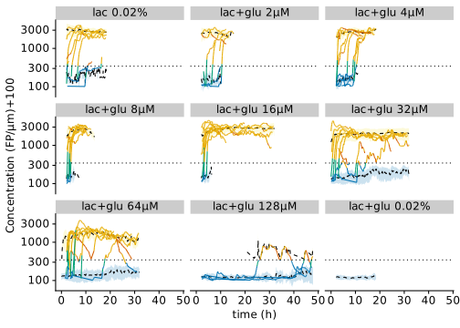
Let’s zoom on the 64µM condition :
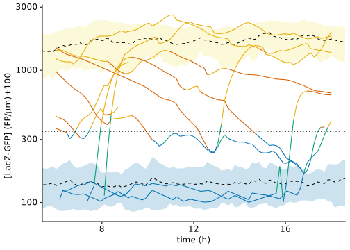
Production VS concentration plots
We want to call a cell switching based on its trajectory on a concentration-vs-production plot : long escapes leading to going from high production high concentration to low production low concentration, or the other way around, should be called switches.
The cells having a “real” switch should be a sub-group of the cells that go out in the region of log_c > 5.5 and log_q < 5.5 or the region log_c < 5.5 & log_q > 5.5.
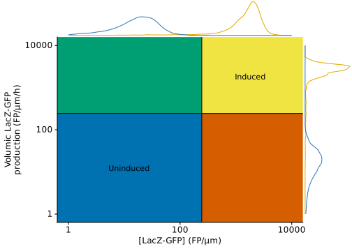
Let’s see what it looks like if we naively plot this for all cells in the transitions area :
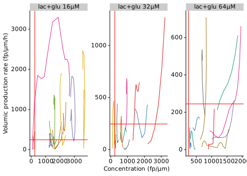
Taking only cells in the transitions area is not enough because most switches take more time than a single cell cycles, we therefore need to aggregate cell cycles
Switching lineage
We first need to create a dataset containing the lineages that are switching. We allow the traces to be expanded 1h around the times of the switch (in the high c - high q or low c - low q area).
Switches off are defined as any cell traces that start on the top right corner of the c-vs-q parameter spaces, and end in the bottom left corner.
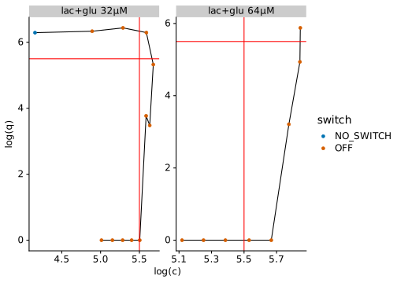
Similarly, switches on are defined as any cell traces that start on the bottom left corner of the c-vs-q parameter spaces, and end in the top right corner.
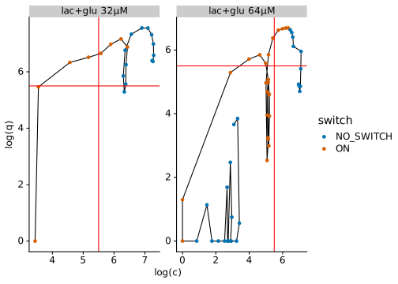
The switches are coherent with what we try to achieve. We can look, for cells at steady state (after 5h), in various conditions, what fraction of cells are going up or down in different conditions
## # A tibble: 9 × 7
## condition n_cells_going_up n_cells_going_down Fraction_cells_going…¹
## <fct> <int> <int> <dbl>
## 1 lac002 4 2 0.00392
## 2 lac002_glu2uM 20 1 0.0324
## 3 lac002_glu4uM 11 1 0.0148
## 4 lac002_glu8uM 3 1 0.00473
## 5 lac002_glu16uM 7 2 0.00207
## 6 lac002_glu32uM 270 151 0.0231
## 7 lac002_glu64uM 107 86 0.0172
## 8 lac002_glu128uM 19 33 0.00275
## 9 lac002_glu002 1 1 0.000543
## # ℹ abbreviated name: ¹Fraction_cells_going_up
## # ℹ 3 more variables: Fraction_cells_going_down <dbl>,
## # Fraction_obs_going_up <dbl>, Fraction_obs_going_down <dbl>Average growth rate of switching cells
We can now compute the average growth rate before switching on or off in all conditions, in order to see whether we observe a certain pattern.
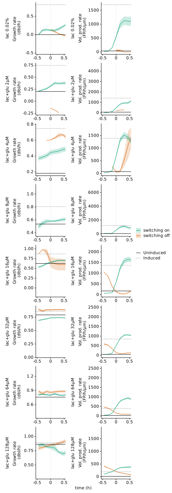
As expected, the results are hard to interpret for most conditions, but we can look at the 32µM and 64µM conditions that are more informative. Let’s start by looking at the number of cells we observe per unit time in both condition and switches :
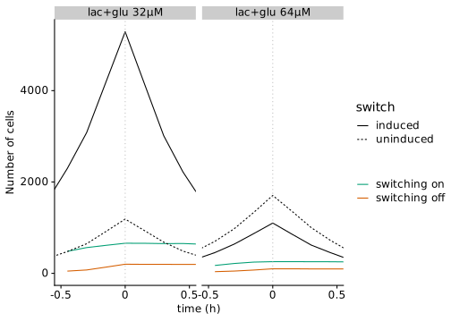
For comparison, the average cell growth rate of the induced and uninduced cells is plotted as horizontal lines. Note that computing the overall average growth rate yield poor results, because it overepresents slow growing cells, and we therefore use the median of mean growth rate over a cell cycle.
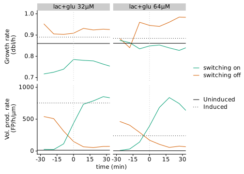
Here we can appreciate that cells that will eventually switch on are growing quite a bit slower than average, while cells that will eventually switch off grow faster in average. It looks though that the mean is lower than the median, which suggest that some slow growing cells are pulling the average down. Let’s plot ecdf as a function of time to see what fraction is responsible for this effect. Note that we take a sample of similar size (~200 cells)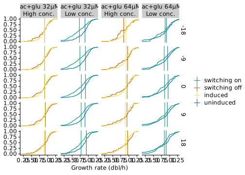
There is a clear shift of growth rate distributions towards lower growth rates for cells switching on. A shift in growth rate distribution towards higher growth rates in off switching cells is also observed, although weaker : the majority of cells switching off grow faster than the majority of cell not switching, but we also observe cells growing slower that will switch on.
Growth rate distribution of switching cells in different area of the parameter space
We now want to look whether the distribution of growth rate of cells switching on or off is typically lower/higher than the distribution of growth rate of cells that are not switching but have similar concentrations or production rates.

It seems like the distribution are following the expected trend : cells about to switch on have a lower growth rate than cells non switching before doing so, and inversely for cells switching off. Note that we still fine cells switching on in the low-prod high-c sector of cells switching off in the high prod- low c sectors, because of the duration of the lineages, but they are not very meaningful. Because those distributions are biased by slow growing cells (being observed more) we can look at this plot after sampling one data point per cell cycle :
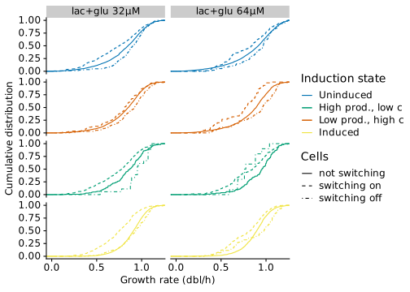
This way of proceeding seems to give a more meaningfull picture, compared to including all data, and the conclusion remain unchanged. We can therefore apply this way of computing the data, and remove the display of cell switching on and that are in the “down” transition zone, or switching off and that are in the “up” transition zone.
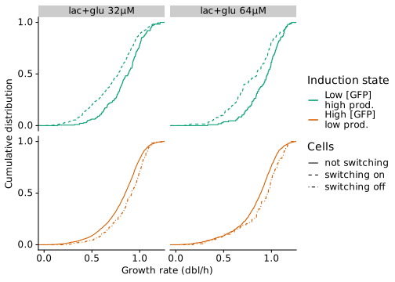
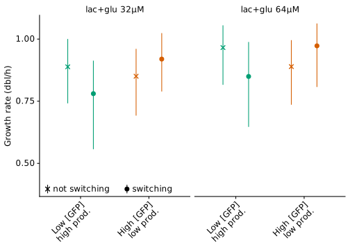
Calculating p-value of the differences :
## function(.seed = 10) {
##
## set.seed(.seed)
##
## tmp_df <-
## myframes_realtrace %>%
## anti_join(myframes_realtrace_switches) %>%
## ungroup() %>%
## filter(condition %in% c("lac002_glu32uM", "lac002_glu64uM")) %>%
## filter(!is.na(mean_l)) %>%
## mutate(q_gfp = ifelse(q_gfp <= 0, 1, q_gfp),
## c_gfp = ifelse(c_gfp <= 0, 1, c_gfp)) %>%
## mutate(
## log_q_gfp = log(q_gfp),
## log_c_gfp = log(c_gfp),
## induced_c = log_c_gfp > 5.5, #Threshold is set at 5.5
## induced_q = log_q_gfp > 5.5 #Threshold is set at 5.5
## ) %>%
## mutate(transition = case_when(
## (!induced_q & induced_c) ~ "going_down",
## (induced_q & !induced_c) ~ "going_up",
## (!induced_q & !induced_c) ~ "down",
## (induced_q & induced_c) ~ "up"),
## Conc_lev = ifelse(!induced_c, "Low C", "High C")
## ) %>%
## filter(transition %in% c("going_down", "going_up")) %>%
## mutate(data_origin = "All") %>%
## full_join( myframes_realtrace_switches %>%
## filter(condition %in% c("lac002_glu32uM", "lac002_glu64uM")) %>%
## filter(going_up | going_down) %>%
## mutate(transition = case_when(
## (!induced_q & induced_c) ~ "going_down",
## (induced_q & !induced_c) ~ "going_up",
## (!induced_q & !induced_c) ~ "down",
## (induced_q & induced_c) ~ "up"),
## Conc_lev = ifelse(!induced_c, "Low C", "High C")
## ) %>%
## mutate(data_origin = ifelse(going_up, "Cell switching on", "Cell switching off")) %>%
## filter(!((going_up & transition %in% c("up", "going_down")) | (going_down & transition %in% c("down", "going_up")))) %>%
## filter(transition %in% c("going_down", "going_up"))
## )%>%
## group_by(data_origin, condition, transition, cell, time_sec) %>%
## nest() %>%
## group_by(data_origin, condition, transition, cell) %>%
## sample_n(1) %>%
## unnest(c(data)) %>%
## ungroup() %>%
## mutate(growth_rate = mean_l/log(2))# %>%
##
## tmp_df %>%
## group_by(condition, Conc_lev) %>%
## nest() %>%
## mutate(model = map(data, ~t.test(.$growth_rate[.$data_origin == "All"],.$growth_rate[.$data_origin != "All"])),
## p_value = map(model, ~.$p.value)
## ) %>%
## unnest(c(p_value))
##
## }Plotting mean and standard error :
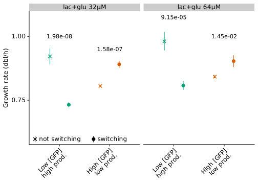